Linear Regression
The simplest algorithm in regression.
Example of self-driving
X: picture of what's in front of the car ---map to----> Y: Steering Direction
Come back to the house price example
| Size |
Price |
| 2104 |
400 |
| 1416 |
232 |
| 1534 |
315 |
| 852 |
178 |
What we will do is fit a straight line to the data.
The procedure of supervise learning is we apply the training set to learning algorithm, then output a function to make predictions about housing prices. The function is called hypothesis. When we input the size of the house, it will output the price.
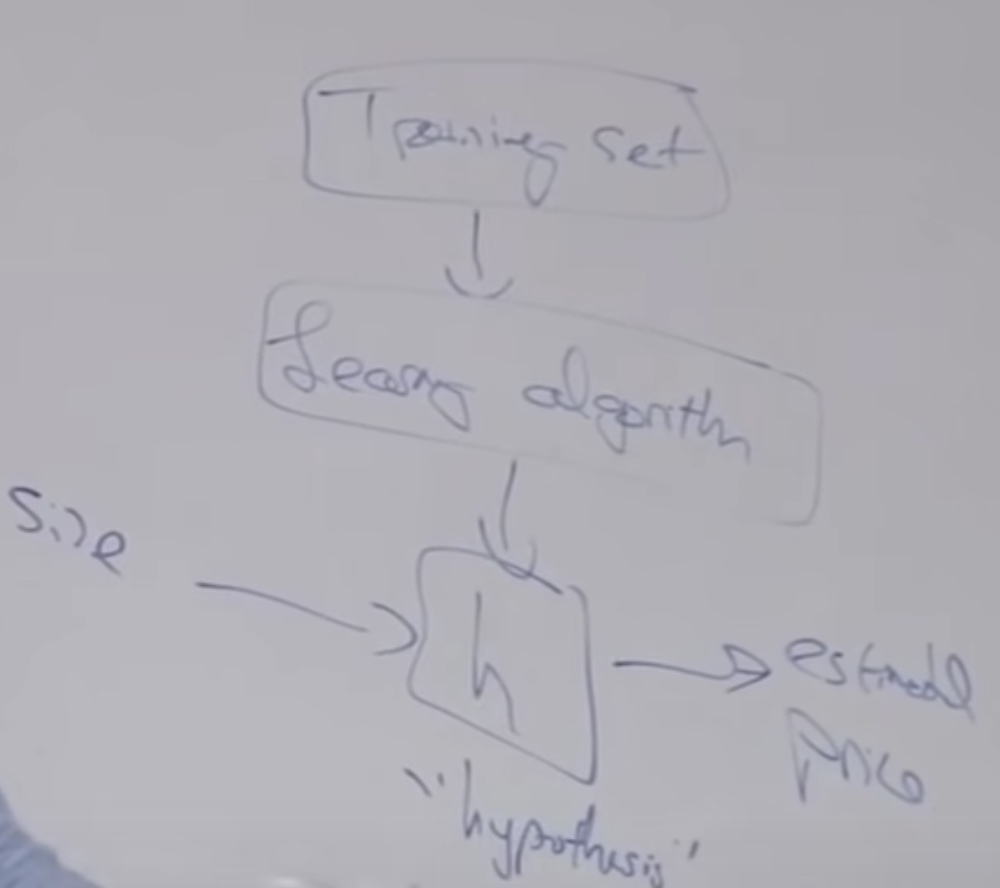
The first thing when design an algorithm:
- How to represent the hypothesis, H?
- In linear regression, the hypothesis should be \(h(x) = \theta_0 + \theta_1x\)(affine function)(one input feature)
- If we continue to take number of bedrooms into account, then we will have \(x_2\). \(h(x) = \theta_0 + \theta_1x_1 + \theta_2x_2\)
- In order to make the notation more compact, we can write as this,
\[h(x)=\sum_{j=0}^{2} \theta_{j} x_{j}, x_0 = 1
\]
\[ \theta=\left[\begin{array}{l}\theta_{0} \\ \theta_{1} \\ \theta_{2}\end{array}\right] \quad x=\left[\begin{array}{l}x_{0} \\ x_{1} \\ x_{0}\end{array}\right]
\]
- \(\theta\) is called parameters
- m is called number of training examples. (# rows in table above)
- x denotes inputs/features.
- y is the output/target variable
- (x,y) is one training example.
- \((x^{(i)},y^{(i)})\) is the ith training example.
- \(x_1^{(1)}\) = 2104, \(x_1^{(2)}\) = 1416
- n is # features. Here n = 2.
- How to choose parameters \(\theta\)?
- Choose \(\theta\) st.(such that) \(h(x)\approx y\) for training examples.
- To clarify that h depends both an the x and parameter \(\theta\). We are going to use the denote \(h_\theta(x) = h(x)\).
- We want to minimize the difference between \(h_\theta(x)-y\). Then we consider minimize\(\frac1 2\sum_{i=1}^{m}(h_\theta(x^{(i)})-y^{(i)})^2\). 1/2 is put by convention.
- 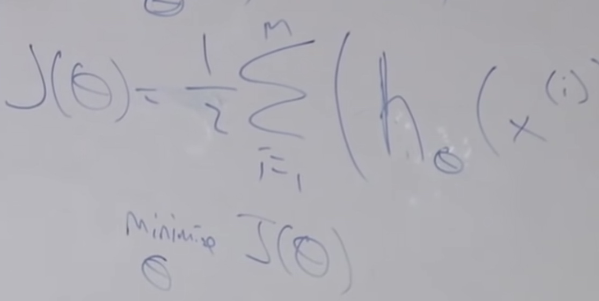
- We define \(J(\theta)\) is equal to the minimize formula
Gradient Descent
Start with some \(\theta\)(say \(\theta=\overrightarrow{0}\))
Keep changing \(\theta\) to reduce \(J(\theta)\)
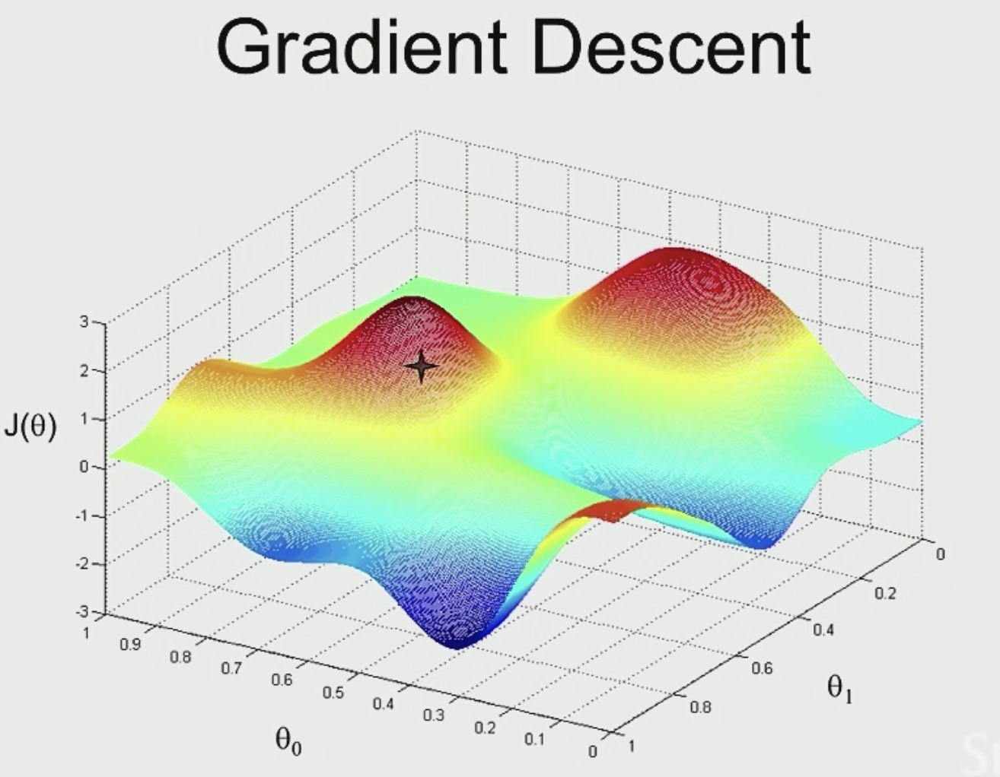
So the blue area are good point for us.
We start at a random place, and we look around to see if we could take a tiny little step, then in what direction should we take the little step?
We will see teh steepest direction down hill.Then we will take another step.
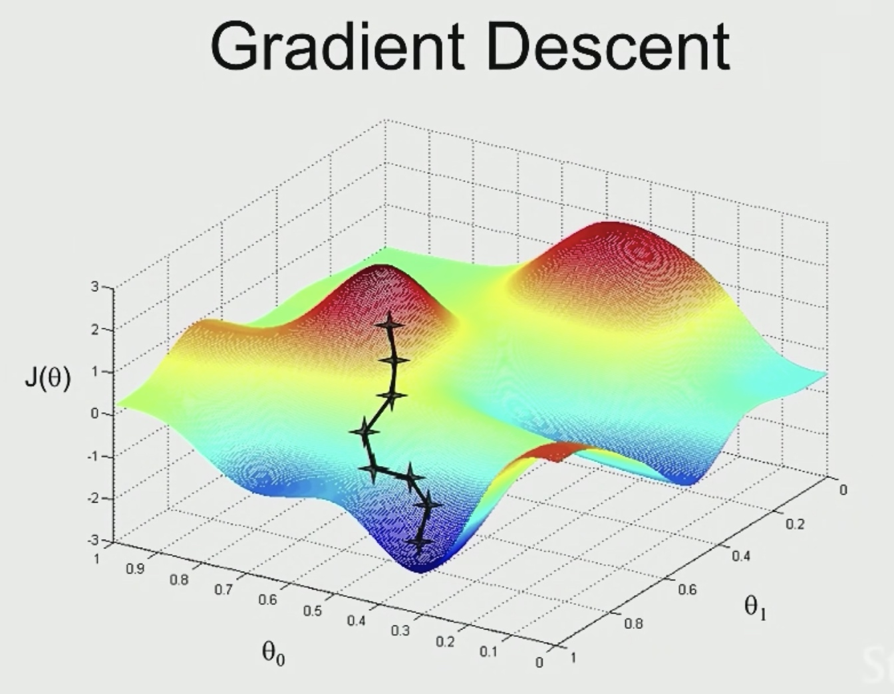
But once we start from another point, we may get to another different local optimal.
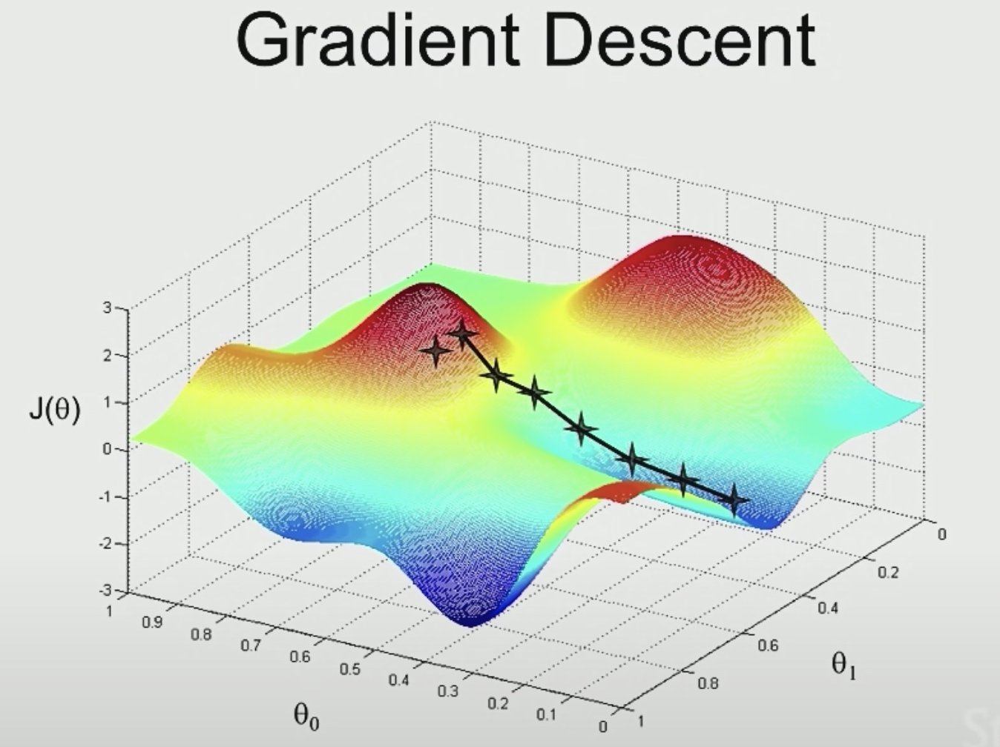
But in linear regression, we may not get into a local optimal state.
One step of gradient descent can be implemented as:
\[\theta_{j}:=\theta_{j}-\alpha \frac{\partial}{\partial \theta_{j}} J(\theta)
\]
\((j = 0,1,2,...n) \) where n is the number of features.
- \(\alpha\) here is called learning rate.
- the formula after \(\alpha\) is partial derivative of \(J(\theta)\), which tells the direction of the next step.
- How to determine learning rate? According to practice, it is set to 0.01.
Use := to denote assignment. We are going to take the value on the right and then assign it to \(\theta\) on the left. (Just like i := i + 1, := is just like = in programming, and = is like == in programming)
\[\begin{aligned}
&\frac{\partial}{\partial \theta_{j}} J(\theta)\\
=&2 \frac{1}{2}\left(h_{\theta}(x)-y\right)\cdot\frac{\partial}{\partial \theta_{j}}\left(h_{0}(x)-y\right) \\
=&\left(h_{\theta}(x)-y\right) \cdot \frac{\partial}{\partial \theta_{j}}\left(\theta_{0} x_{0}+\theta_{1} x_1,+\cdots+\theta_{n} x_{n}-y)\right.\\
=& (h_{\theta}(x)-y) \cdot x_j
\end{aligned}
\]
So,
\[\theta_{j}:=\theta_{j}-\alpha (h_{\theta}(x)-y) \cdot x_j
\]
For multiple training examples,
\[\theta_{j}:=\theta_{j}-\sum_{i=1}^{m}\left(h_{\theta}\left(x^{(i)}\right)-y_{i}^{(i)}\right) \cdot x_{j}^{(i)}
\]
Then the gradient descent algorithm is to repeat until convergence. In each iteration of gradient descent, do update for j = 0,1,...,n.
Perhaps we could find pretty good \(\theta\), it turns out \(J(\theta)\) will always look like this.
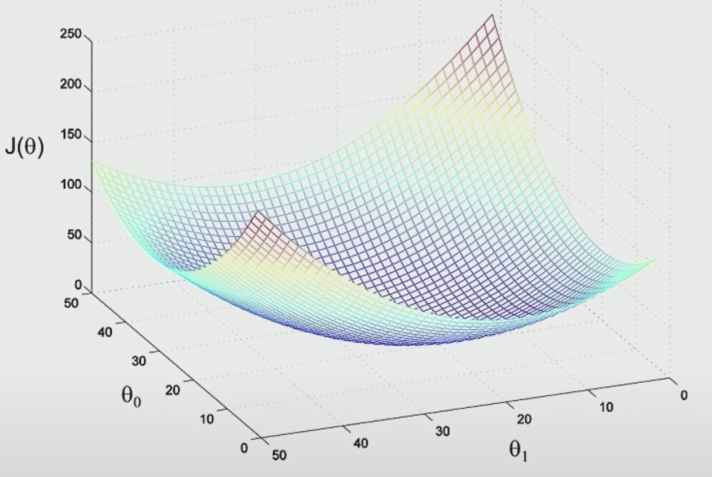
The contours of the big bowl will be ellipsis.
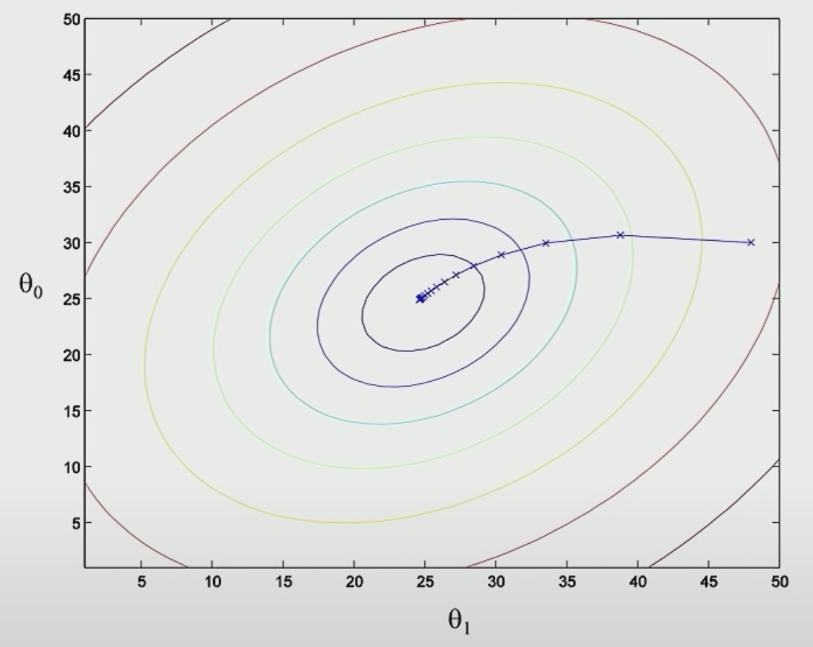
Because there is only one global minimum, We will eventually get there.
Now come to the choose of learning rate Alpha.
- If we set it too large, then the step will be too large, we will run past the minium.
- If we set it too small, we need a lot of iterations and the algorithms will be slow.
- Usually we will try a lot of values and see.
- When we see the cost function increasing rather than decreasing, that's a very strong sign that the learning rate is
A Real Dataset
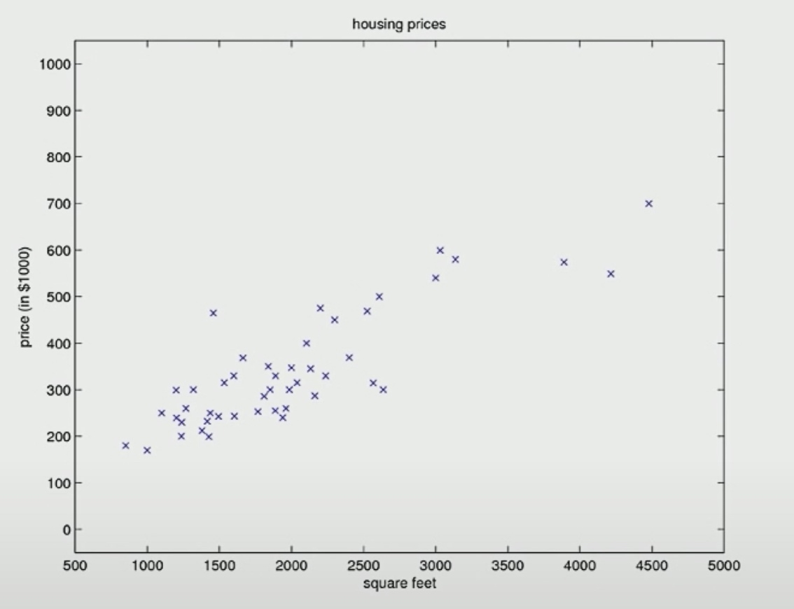
The number of input features(m) is 49. If we set the \(\theta\) to zero, we mean that our straight line to fit to the data to be that horizontal line.
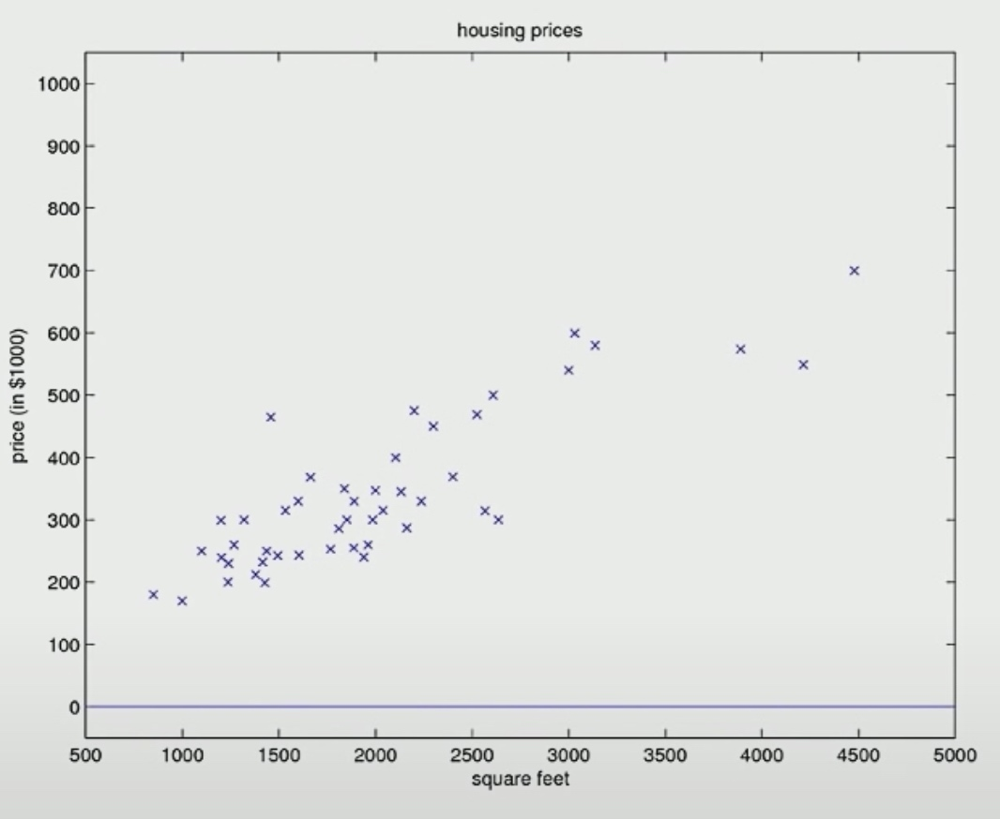
Then we will find different parameter \(\theta\) that allows this straight line tot fit the data better. So here is a different values of \(\theta_0\) and \(\theta_1\) after one or two iteration.
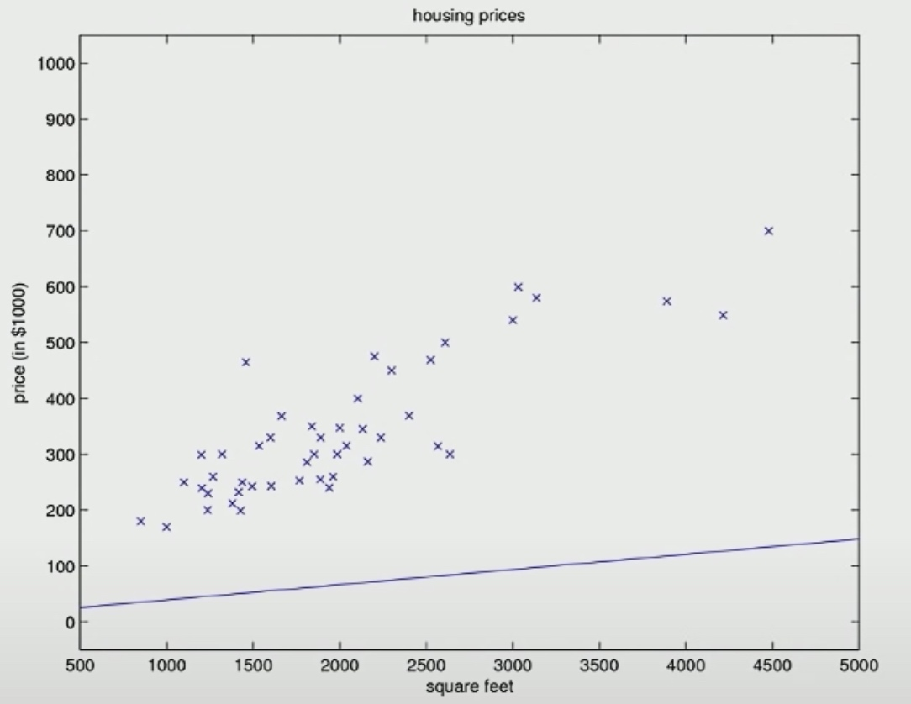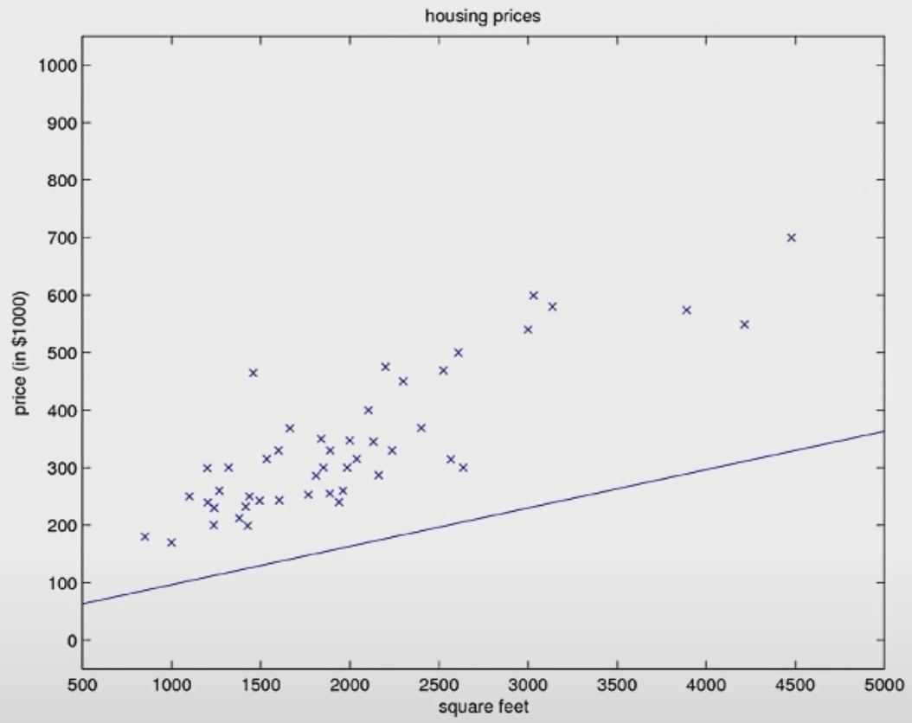
Here is the final descent result.
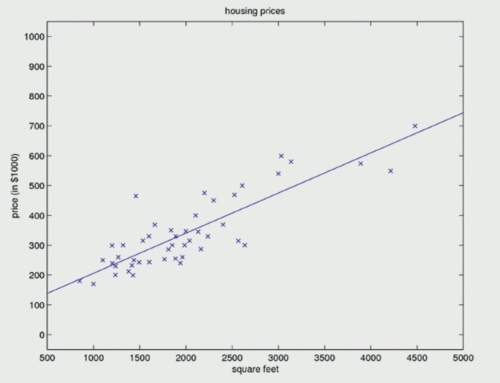
Batch Gradient Descent
The Batch means we look at the whole training example, which means the 49 features in this example.
Disadvantage
When the dataset is too large, it is time-consuming to do the whole computing. Because in every step of iteration, we need to scan the whole database for information and do computing.
Stochastic Gradient
Repeat
\[\begin{aligned}
&\text { for } i =1 \text { to } m,\{ \\
&\qquad \theta_{j}:=\theta_{j}+\alpha\left(y^{(i)}-h_{\theta}\left(x^{(i)}\right)\right) x_{j}^{(i)}\} \quad \text { (for every } j \text { ) }
\end{aligned}
\]
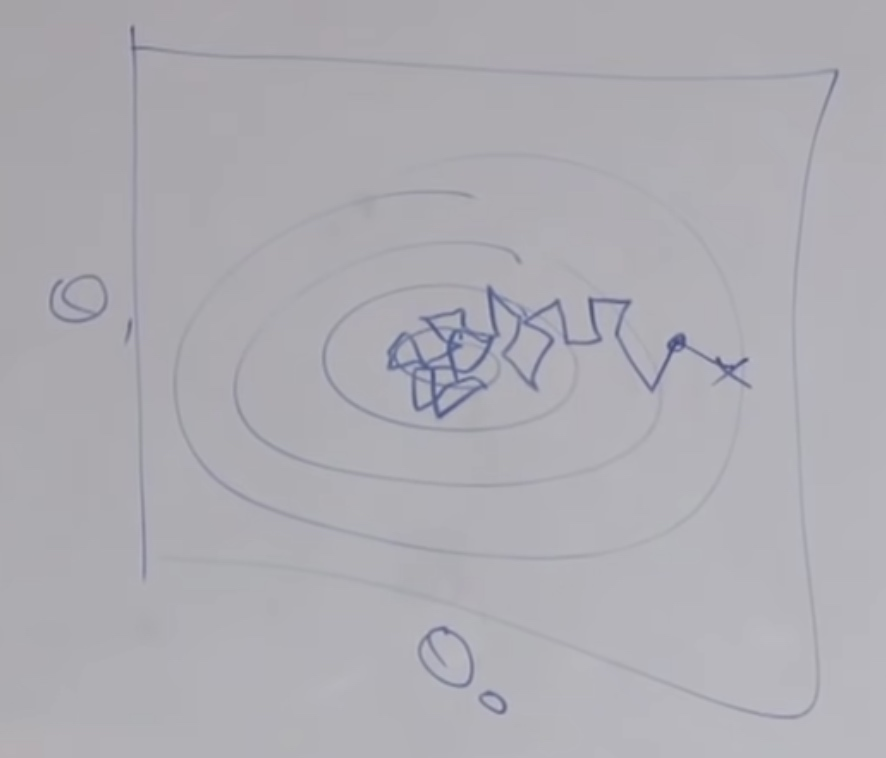As this Gradient Descent just take one feature in each iteration, so it may act like a slightly random path. Eventually, it cannot optimally converge.
Normal Equation
There is a way to solve for the optimal value of the parameters theta to just jump in one step to the global optimum without needing to use an iterative algorithm.
It works only for linear regression.
\[\begin{aligned}
&\nabla_{\theta} \underbrace{J(\theta)}_{\theta \in \mathbb{R}^{n+1}}=\left[\begin{array}{l}
\frac{\partial J}{\partial \theta_{0}} \\
\frac{\partial J}{\partial \theta_{1}} \\
\frac{\partial J}{\partial \theta_{2}}
\end{array}\right]
\end{aligned}
\]
Define A is a 2*2 Matrix.
\[A \in \mathbb{R}^{2\times2} \quad A=\left[\begin{array}{ll}
A_{11} & A_{12} \\
A_{21} & A_{22}
\end{array}\right]
\]
Lets say, f is a function takes in 2*2 matrix to real number.
\[\begin{aligned}
&f(A)=A_{11}+A_{12}^{2} \quad f: \mathbb{R}^{2 \times 2} \mapsto \mathbb{R} \\
&f\left(\left[\begin{array}{ll}
5 & 6 \\
7 & 8
\end{array}\right]\right)=5+6^{2}
\end{aligned}
\]
\[\bigtriangledown_{A} f(A)=\left[\begin{array}{ll}
\frac{\partial f}{\partial A_{11}} & \frac{\partial f}{\partial A_{12}} \\
\frac{\partial f}{\partial A_{21}} & \frac{\partial f}{\partial A_{22}}
\end{array}\right]
\]
\[\bigtriangledown_{A} f(A)=\left[\begin{array}{cc}
1 & 2 A_{12} \\
0 & 0
\end{array}\right]
\]
The broad outline we are going to do is: we are going to take
\[\nabla_{\theta} J(\theta)=\overrightarrow{0}
\]
If A is a square matrix.(A is \(\mathbb{R}^{n \times n} \))
We denote the trace of A: tr A = sum of diagnoal entries =\(\sum_iA_{ii}\)
Some properties of trace:
- \(tr A = trA^T\)
- Define \(f(A) = tr(A B)\). Then \(\bigtriangledown_{A} f(A)=B^T\)
- \(trAB = trBA\)
- \(trABC = trCAB\)
- \(\bigtriangledown_{A} trAA^TC = CA + C^TA\)
Finally, we write down the J theta.
\[J(\theta)=\frac{1}{2} \sum_{i=1}^{m}\left(h\left(x^{(i)}\right)-y^{(i)}\right)^{2}
\]
If we define
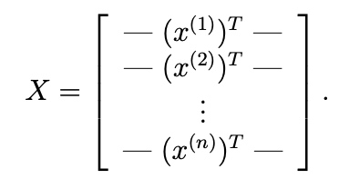
y be the label of trainning sample.
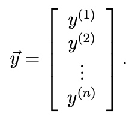
Since \(h_\theta(x^{(i)}) = (x^{(i)})^T\theta\),
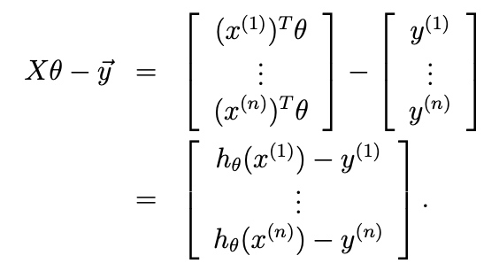
Also, we know \(z^{T} z=\sum_{i} z_{i}^{2}\).
So,
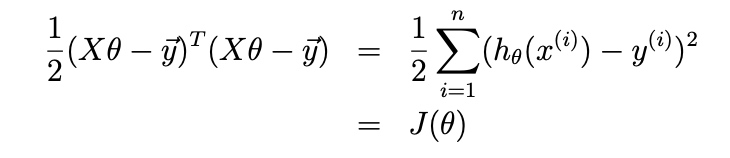
Now we will do
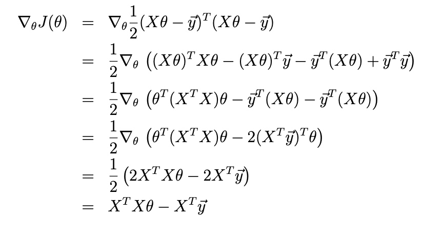
So \(X^TX\theta = X^Ty\) is called normal equations.
Then we can get \(\theta=(X^TX)^{-1}X^Ty\)